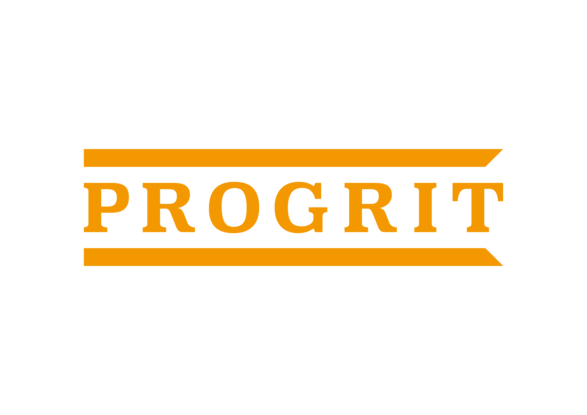

株式会社プログリット / 代表取締役社長 岡田祥吾
SPEAKER
趣味: キックボクシング、釣り、ゴルフ
今日は会社説明はほとんどしません。
「就活の勝ち方」の話をします。
これ、何の時間だと思いますか？
皆さんが生涯で仕事に使う時間です。
10時間 × 5日 × 4週 × 12か月 × 43年
小学校から大学までの授業時間の約7倍
それでは、この時間を
どう過ごすか？
仕事に本気になれる
人生にしなければならない。
就職活動とは、
10万時間をどのように
使うかを決めること。
市場価値を高める
高めた価値で社会に影響を与える
フェーズ1で市場価値を
どれだけ高めたかで、
この10万時間を
いかに有効的に使えるかが決まる。
10万時間をすごす意思決定。
では、何を基準に
選べばいいのか？
「自分の市場価値を上げる」
市場価値とは、あなたのスキル・経験・知識に対して
企業が「払ってもいい」と思える対価の大きさのことです。
なぜ、市場価値を高める
必要があるのか？
出典: 総務省「労働力調査」
日本の転職者数は、毎年300万人以上。
「一つの会社で定年まで」という前提は、もう成り立っていません。
「なかなか終身雇用を守っていくのは
難しい局面に入ってきた」
— 豊田章男（トヨタ自動車 社長 / 2019年5月）
自分の力で、自分のキャリアを切り拓く必要があります。
1億ユーザー到達までの期間
WEF 予測（2030年まで）
22%
の仕事が役割変化する
「今の延長線上」で考えるキャリアは、数年後に通用しなくなるかもしれません。
会社に依存するのではなく、
自分自身の市場価値を高めること。
それが、最大のリスクヘッジです。
市場価値を
どう高めるか？
市場価値
需要の大きさ
汎用性
供給の少なさ
希少性
掛け算なので、片方がゼロだと市場価値もゼロになります。
市場価値
需要の大きさ
供給の少なさ
需要の大きさ（汎用性）の観点
自分の会社・部署の中だけで通用するスキルは、市場価値を高めにくいです。
供給の少なさ（希少性）の観点
誰もが当たり前に選ぶ道は、市場価値を高めにくいです。
では、どのような選択をすると
市場価値が高まるのか？
業界平均を凌駕するスピードで、
自力成長している会社を選べ
戦略から実行まで、
すべてに責任を持てる会社を選べ
業界全体が伸びているから成長している
業界のトレンドが変わった時に成長する力がありません。今は良くても1年後どうなっているか分かりません。
競合が横ばいの中で、独自の力で伸びている
他社にはない知見が蓄積され、どこでも通用する力が身につきます。
← 振り返り → 戦略へフィードバック →
戦略だけ
失敗しても「実行が悪かった」と言えてしまい、学びが浅くなります
実行だけ
失敗しても「戦略が悪かった」と言い訳でき、成長につながりにくいです
上流〜下流
全ての結果が自分に返る。成長スピードが圧倒的に速くなります
売上高71億円見込み
東証グロース市場に上場
売上・利益・時価総額No.1
新たな市場を創出
でも、僕たちは
"英語の会社" で終わるつもりはありません。
ここから、プログリットは大きく変わります。
MISSION
世界で自由に活躍できる人を増やす
教育こそが国家の競争力であり、
企業の成長エンジンであり、
個人の人生の選択肢を決める土台である。
真面目に取り組む姿勢、完璧を目指す美意識、
他者へのリスペクト、コミュニケーションの丁寧さ。
教育の質を底上げすることが、国力を高めるレバーになります。
人の可能性を最大化し、テクノロジーの力で科学と仕組みを用いて
成果を再現性を持って出し続ける。
企業として圧倒的に成長し、
国力を上げるレバーとなる存在です。
プログリットの
最大の特徴
成長スピード
予想
単位: 百万円
抜擢文化
新卒3年目で新規事業責任者
スピフル事業部 / ゼロから売上5〜6億円規模まで成長中

年商30億円事業のマーケ責任者
シャドテン事業部 / 年間広告予算7〜8億円の意思決定を担う
SPECIAL INVITATION
最先端のAIを徹底的に活用する
2DAYS INTERNSHIP
企画して、
発表して、
終わり。
成果物
パワーポイント
企画して、
AIで実装して、
動かす。
成果物
実装レベルのプロトタイプ
企画
要件定義
コーディング
LP制作
プロダクト完成
SPECIAL LECTURE
代表・岡田祥吾による
「就活の勝ち方」特別講座
コンサル・大企業志望で、今後の就活インターンで有利になりたい人
まだ就活の軸が固まり切っていない人
AI時代の働き方を体感したい人
東京
(東京)
大阪
(大阪)
※ 定員に達し次第、締め切ります / ※ 交通費支給